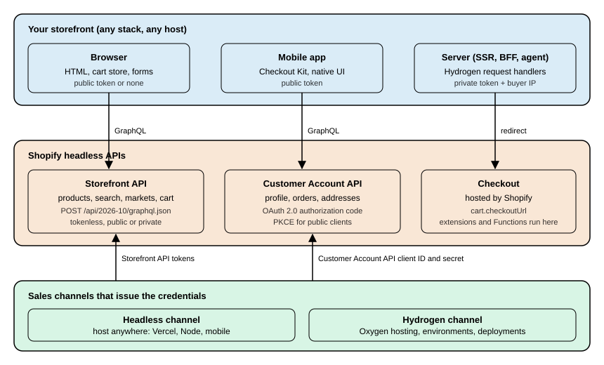
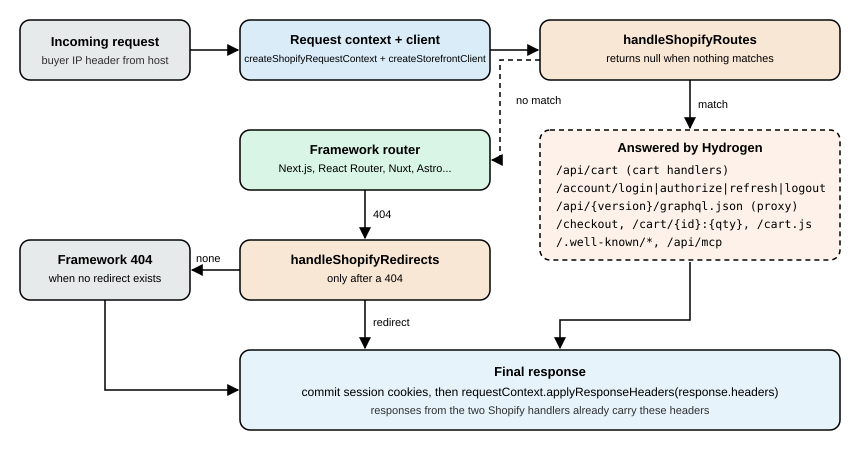

Storefront API and Headless with Hydrogen
|
This content was generated with the assistance of AI and should be verified against the official documentation before being relied on in production. |
This page was written against the Storefront API and Customer Account API version 2026-10 (the latest stable
version, released on 2026-10-01), Hydrogen 2026-10 (@shopify/hydrogen 2026.10.2, generally available since
2026-10-14), @shopify/storefront-api-client 2.0.1, @shopify/mini-oxygen 4.2.3 and Shopify CLI 5.0.0 (Node.js 22.12
or later, or Node.js 24), and every fact was checked on 2026-10-27. Headless access is not tied to a plan in the same
way as checkout customization: the Storefront API and the Customer Account API are reached through a sales channel,
and the plan mostly changes quantities (for example how many public Oxygen environments a store can have), which are
listed in the sections where they matter.
A headless storefront is a storefront whose pages you build and host yourself while Shopify keeps the catalogue, the
cart, checkout, customers and orders. This page covers the whole path: when going headless is worth the cost, the two
GraphQL APIs and their tokens, the Headless and Hydrogen sales channels that issue credentials, the Cart API and how a
cart turns into a checkout, Hydrogen 2026-10 (which stopped being a framework and became a toolkit), Oxygen (Shopify’s
hosting for Hydrogen), and the Customer Account API with its OAuth flow. It continues the pages on
authentication and access scopes (the Admin API side of
tokens) and on Markets, whose @inContext rules apply
unchanged to a headless storefront, and it sits next to the theme
architecture page, because a theme is the alternative this page keeps comparing against.
The running example is Pocket Coffee, the small specialty-coffee shop with the "Single-origin beans" product (18
variants, SKUs such as PC-ETH-WHL-250), the "Starter kit" and the Coffee Club group. In this page it becomes a
Spanish and English storefront built with Hydrogen on Oxygen: the product page shows the roast date metafield, the cart
applies the Coffee Club discount automatically, and signed-in members see their orders through the Customer Account
API.
Two conventions are used throughout. Every GraphQL document in the page was validated against the public Storefront API
2026-10 schema, downloaded by introspection, and the Customer Account API documents against the schema that ships with
@shopify/hydrogen. The Hydrogen and client-library examples marked as run were executed locally with fetch
replaced by a stand-in, so the headers, URLs, routes and variables they print are real library behaviour, but no
request reached Shopify. Nothing was executed against a Shopify store, because that needs an account, a store and
tokens, and none was created. The section What was run and what was not lists each check.
Why and when to go headless
Headless commerce separates the storefront’s frontend from its backend. You choose the stack, the framework and the hosting for the frontend, and Shopify’s APIs provide the data (products, collections, customers) and the commerce capabilities (cart, checkout, international pricing). The same APIs serve a website, a mobile app, a game, a smart device or a buy button on a site you already have.
Shopify’s own guidance is to consider headless only when a merchant’s processes or experience cannot be reached with sales channels, themes and apps. The cases it lists are a storefront experience that existing web or mobile tools cannot support, a frontend stack that does not use Liquid, Shopify commerce added to infrastructure you already run, selling on channels Shopify does not support out of the box, and a content management system whose content must be woven into the storefront. It also states plainly that a headless storefront costs more to build and run than a theme, so the merchant must accept the extra cost and have developers to maintain it after launch.
| You want to | Build with |
|---|---|
A full storefront in a JavaScript framework such as Next.js or React Router |
Hydrogen 2026-10, Shopify’s headless toolkit |
A native iOS, Android or React Native app |
The Storefront API plus Checkout Kit (the mobile commerce guides) |
Everything yourself, in any language and stack |
The Storefront API and the Customer Account API called directly ("bring your own stack") |
Products and buy buttons on a site you already have |
Storefront Web Components or Buy Button JS |
Shopify products on a WordPress site |
The Shopify Plugin for WordPress |
An Online Store with a design you own |
A theme (see the theme architecture page), not headless |
Source: Shopify: About headless commerce
For Pocket Coffee the decision is not obvious, and that is the point of listing it. A Dawn or Horizon theme already gives the shop two languages, a roast-date badge through a theme block and the Coffee Club discount through a Shopify Function, with no hosting to run. Headless is justified only if the shop wants something a theme cannot do, for example a single Next.js application that serves the storefront, a recipe blog from a headless CMS and a native app from the same code, or a page-speed target that the team prefers to own end to end. The rest of the page assumes that decision has been taken.
Architecture
Three parties are involved in every headless request. Your storefront (browser, mobile app or server) renders the user
interface. Shopify’s two headless APIs supply data and customer sessions. Checkout stays on Shopify: the cart returns a
checkoutUrl and the buyer is redirected to it, which means checkout customization (checkout UI extensions, Shopify
Functions, branding) applies to a headless storefront exactly as it does to a theme.

The Storefront API is GraphQL only: there is no REST Storefront API. The Customer Account API is also GraphQL only. Both can be called from any HTTP client. For development before a store exists, mock.shop is a public Storefront API with demo data that needs no store and no token (carts work and checkout is mocked, the Customer Account API is not available, and private tokens are rejected).
The Storefront API
The Storefront API provides the commerce primitives a storefront needs: products and collections, search and predictive search, selling plans, pages, blogs and articles, menus, metaobjects and metafields, localization, sitemaps, URL redirects, the cart and the hand-off to checkout. The 2026-10 schema, downloaded by introspection, has 421 types, 34 query fields and 41 mutations.
Endpoint and versioning
All queries go to one endpoint, which only accepts POST:
https://<shop>.myshopify.com/api/2026-10/graphql.jsonThe version is part of the path and follows the same quarterly calendar as the Admin API: a stable version is released at 17:00 UTC on the first day of January, April, July and October, is supported for at least 12 months, and overlaps the next version by at least 9 months. At the check date the supported versions are 2026-01, 2026-04, 2026-07 and 2026-10, with 2027-01 as the release candidate. A request to a retired version is served by the oldest supported one, so always pin the version in the URL. The Storefront API and the Customer Account API are versioned APIs; Hydrogen and Hydrogen React are libraries versioned by their own releases (Hydrogen 2026-10 uses Storefront API 2026-10).
The Storefront API has no maintenance-mode status in Shopify’s documentation or changelog. It is actively extended in
2026: the channelId argument on @inContext arrived in 2026-10, cart discount fields in 2026-04 and error codes in
2026-01. What Shopify has deprecated is the customer-scoped part of the API, covered in
Legacy customer accounts.
Tokenless access, public tokens and private tokens
The Storefront API supports three access modes. They differ in where the credential may live and in which features they unlock.
| Mode | How you send it | Where it may live | What it allows |
|---|---|---|---|
Tokenless |
No header |
Anywhere |
Products and collections, selling plans, search, pages, blogs and articles, and cart read and write. The query complexity is capped at 1,000. |
Public access token |
Header |
A browser or a mobile app: the token is visible to buyers |
Everything tokenless allows plus the features that need a token (product tags, metaobjects and metafields, menus, customers), limited to the scopes granted to the token. |
Private access token |
Header |
Server side only: treat it like a password |
The same scopes, with higher trust: buyer IP forwarding lets Shopify tell buyers apart for bot protection and rate limiting. |
A public token is created by the Admin API storefrontAccessTokenCreate mutation or by the Headless channel. A private
token comes from the Headless channel (which provides both kinds automatically), from a delegate access token of a custom
app, or from requesting unauthenticated access scopes on an existing access token. An app can have at most 100 active
storefront access tokens per shop. Public access capacity scales with the number of buyers, measured by their IP
address.
The Admin API call that creates a public token (an app with the right scope, not run against a store) is validated against the Admin 2026-10 schema:
mutation CreateStorefrontToken($input: StorefrontAccessTokenInput!) {
storefrontAccessTokenCreate(input: $input) {
storefrontAccessToken {
id
title
accessScopes {
handle
}
}
userErrors {
field
message
}
}
}
query ListStorefrontTokens {
shop {
storefrontAccessTokens(first: 10) {
nodes {
id
title
createdAt
}
}
}
}The three request shapes, as curl commands with placeholders (documented from Shopify’s reference, not executed
against a store):
# Tokenless: the three most recent products
curl -X POST "https://pocket-coffee.myshopify.com/api/2026-10/graphql.json" \
-H 'Content-Type: application/json' \
-d '{"query": "{ products(first: 3) { edges { node { id title } } } }"}'
# Public token: safe in a browser or a mobile app
curl -X POST "https://pocket-coffee.myshopify.com/api/2026-10/graphql.json" \
-H 'Content-Type: application/json' \
-H "X-Shopify-Storefront-Access-Token: ${SHOPIFY_STOREFRONT_PUBLIC_TOKEN}" \
-d '{"query": "{ shop { name } }"}'
# Private token: server only, forwarding the buyer's IP address
curl -X POST "https://pocket-coffee.myshopify.com/api/2026-10/graphql.json" \
-H 'Content-Type: application/json' \
-H "Shopify-Storefront-Private-Token: ${SHOPIFY_STOREFRONT_PRIVATE_TOKEN}" \
-H "Shopify-Storefront-Buyer-IP: ${BUYER_IP}" \
-d '{"query": "{ shop { name } }"}'Rules that prevent the usual incidents:
-
Never give a private token a browser prefix such as
NEXT_PUBLIC_, never ship it to a mobile app and never put it in a client component. Hydrogen’screateStorefrontClient()throws when a private client is created in the browser. -
Shopify-Storefront-Buyer-IPis case-sensitive and must carry the IP address of the buyer, taken from a header your host sets and that buyers cannot spoof. Without it Shopify cannot tell buyers apart, which can throttle requests, weaken bot protection and break unauthenticated checkout flows. Static builds and other requests that do not come from a buyer do not need it. -
Request only the scopes the storefront needs: a leaked private token exposes what its scopes allow.
-
Rotate a token immediately when it leaks. The Headless channel keeps old and new credentials valid at the same time so that clients can be updated before the old one is revoked.
Unauthenticated access scopes
A token created through the Headless channel carries the permissions chosen in the channel. For an app, the same
permissions are the unauthenticated_* access scopes:
| Scope | Gives access to |
|---|---|
|
|
|
|
|
The |
|
|
|
Selling plan content on |
|
|
|
|
|
Storefront content such as |
|
|
|
|
|
The |
A missing scope does not fail the request: the field is simply not returned or the object is empty. When a Pocket Coffee product page shows no roast date, check that the metafield is exposed to the Storefront API and that the token can read metafields before debugging the query.
Rate limits, bots and errors
The Storefront API does not rate limit buyer traffic with a fixed requests-per-minute number: capacity scales with buyers. What is limited:
-
Automated traffic. Bots and crawlers are limited, most strictly when unsigned; operators can sign requests with Web Bot Auth for higher limits, and merchants can find ready-made signatures in the admin to crawl their own store.
-
Checkout creation, throttled per minute: an excess answers
200with aTHROTTLEDerror. Shopify recommends a request queue with exponential backoff. -
Tokenless queries, capped at a complexity of 1,000 (calculated the same way as Admin API query cost). A query above the cap returns the error code
MAX_COMPLEXITY_EXCEEDEDwith the cost and the maximum. -
Suspicious requests, answered with
430 Shopify Security Rejection. The usual cause in a headless storefront is a missing or wrong buyer IP header.
Shopify Plus bot protection applies to the Cart object, not to the Checkout object, and the Storefront API
must not be used to duplicate functionality Shopify already provides (the API terms apply).
Errors follow GraphQL conventions, with one trap: most failures arrive as HTTP 200 with an errors array, because
partial success is valid in GraphQL. Mutations report validation problems in userErrors, which must be requested.
extensions.code or status |
Meaning |
|---|---|
|
The client exceeded a limit (similar to 429). |
|
The credentials are missing or lack the scope (similar to 401). |
|
The shop is not active, which can follow repeated rate-limit violations or fraud risk. |
|
A Shopify error, returned with |
|
A tokenless query went over the complexity limit of 1,000. |
400 |
The request could not be processed (for example the |
402 |
The shop is frozen: its owner must pay the outstanding balance. |
403 |
The shop is forbidden, for example because it was flagged as fraudulent. |
404 |
The resource is gone or never existed. |
423 |
The shop is unavailable (repeated limit violations or fraud risk). |
430 |
Shopify Security Rejection: check the buyer IP header. |
5xx |
An internal error: check the Shopify status page. |
Querying products and the @inContext directive
The Pocket Coffee product page needs the product, its options, the 18 variants with their SKUs and prices, and the roast date metafield. The query takes the market as variables so that prices and translations come from Shopify:
query PocketCoffeeProduct($handle: String!, $country: CountryCode!, $language: LanguageCode!)
@inContext(country: $country, language: $language) {
product(handle: $handle) {
id
title
description
availableForSale
options {
name
optionValues {
name
}
}
roastDate: metafield(namespace: "custom", key: "roast_date") {
value
type
}
variants(first: 18) {
nodes {
id
sku
title
availableForSale
selectedOptions {
name
value
}
price {
amount
currencyCode
}
}
}
}
}Source: Shopify: product query
This document validates against the Storefront API 2026-10 schema (and against the schema shipped with Hydrogen). A document with two mistakes is rejected:
mutation {
cartCreate(input: {lines: [{merchandiseId: "gid://shopify/ProductVariant/1", qty: 1}]}) {
cart { id checkoutUrll }
}
}The validator (the graphql package’s validate() against the introspection result) reports both:
Field "qty" is not defined by type "CartLineInput".
Cannot query field "checkoutUrll" on type "Cart". Did you mean "checkoutUrl"?The @inContext directive of the 2026-10 schema accepts these arguments, read from the introspection result:
| Argument | Effect |
|---|---|
|
A |
|
A |
|
A |
|
A |
|
The identifier of the customer’s preferred location. |
|
New in 2026-10 (announced 2026-07-15): the channel ID used for context, overriding the channel of the API credentials. |
The schema also declares the directives @defer (streamed responses; documented as available only in the unstable
version), @include, @skip, @oneOf, @specifiedBy, @deprecated and @accessRestricted.
The rule from the Markets page applies without change: load each market’s prices explicitly through @inContext and
treat Shopify as the source of truth, never compute a local price from the base price. The market is also what makes the
Spanish and English storefronts of Pocket Coffee possible, so a storefront must send country and language on every
query that returns prices or translated content. Hydrogen can supply the two variables for you, as shown below.
Other queries a storefront typically needs, all validated against the 2026-10 schema:
query Localization {
localization {
country {
isoCode
name
currency {
isoCode
symbol
}
}
language {
isoCode
endonymName
}
availableCountries {
isoCode
name
availableLanguages {
isoCode
}
}
}
}
query Sitemap {
sitemap(type: PRODUCT) {
pagesCount {
count
}
resources(page: 1) {
items {
handle
updatedAt
}
}
}
urlRedirects(first: 10) {
nodes {
path
target
}
}
}
query Predictive($term: String!) @inContext(country: ES, language: ES) {
predictiveSearch(query: $term, limit: 4, types: [PRODUCT, COLLECTION, QUERY]) {
products {
title
handle
}
queries {
text
}
}
}Source: Shopify: localization query
The localization query feeds a country and language selector, sitemap and urlRedirects replace what a theme gets
for free (a headless storefront must serve its own /sitemap.xml and honour the merchant’s redirects), and
predictiveSearch powers search-as-you-type. The productByHandle, collectionByHandle, pageByHandle and
blogByHandle fields are deprecated in the schema: use product(handle:), collection(handle:), page(handle:) and
blog(handle:).
Which API for which job
| Storefront API | Admin GraphQL API | |
|---|---|---|
Audience |
Buyers: any client, including browsers and phones |
Merchants and their apps: server side only |
Authentication |
None, public token or private token |
An access token of an installed app (see the authentication page) |
Endpoint |
|
|
Rate limiting |
Scales with buyer traffic; bots, checkout creation and tokenless complexity are limited |
Cost-based leaky bucket per app and store (see the Admin GraphQL API page) |
Typical use |
Catalogue, search, cart, markets |
Products, orders, inventory, discounts, webhooks, bulk operations |
A common mistake is sending Admin API traffic to the Storefront path: the bulk operation guides print their Admin
examples with /api/<version>/graphql.json, which is the Storefront endpoint, while the Admin endpoint has the
/admin/ segment. The two APIs also have different tokens, headers and schemas.
The Headless and Hydrogen channels
A headless storefront gets its credentials through a sales channel in the Shopify admin, not through a custom app. Shopify offers two channels, and the difference is where the storefront is hosted.
| Headless channel | Hydrogen channel | |
|---|---|---|
Use it when |
You host the storefront yourself, on any stack: a mobile app, a Node server, or a Hydrogen storefront deployed somewhere other than Oxygen (for example Vercel Shop) |
You build with Hydrogen and deploy to Oxygen, Shopify’s hosting for Hydrogen storefronts |
Storefront API tokens |
A public and a private token per storefront, copied from the admin |
Added to the storefront’s environment as variables; pulled locally with |
Customer Account API |
Configured per storefront in Customer Account API settings; you copy the client ID (and secret) |
Configured in the storefront’s Storefront settings; the client ID arrives as |
Permissions |
All storefronts of the channel share the same API permissions |
Managed in the storefront’s settings |
Also gives you |
Product publishing to the channel, order attribution, analytics and reports by channel |
Environments, deployments, GitHub continuous deployment, environment variables, product publishing to the channel |
Source: Shopify: Get your keys
Each channel hands a storefront these credentials:
-
Storefront API tokens: a public access token (for browsers and mobile apps, where buyers can see it) and a private access token (for your server, a secret).
-
Customer Account API credentials: a client ID, and a client secret for confidential clients that run on a server.
Tokenless access needs neither. On Oxygen you never copy tokens by hand: when a storefront is created Shopify adds the
variables the app needs, including PRIVATE_STOREFRONT_API_TOKEN, PUBLIC_STOREFRONT_ID,
PUBLIC_CUSTOMER_ACCOUNT_API_CLIENT_ID and SHOP_ID.
Working with the Headless channel
The tasks, in the order a project meets them:
-
Install the Headless channel from the Shopify App Store. On installation, choose Create storefront to generate the first storefront’s public and private access tokens.
-
Add more storefronts from Sales channels > Headless > Add storefront. Each storefront has its own tokens, and all storefronts in the channel share the same API permissions. A storefront can be renamed from its detail page.
-
Manage permissions from the storefront’s Manage API access: choose Manage for the Storefront API or the Customer Account API, edit the permissions and save. Customer Account API scopes and Storefront API scopes are separate lists.
-
Publish the products and collections the storefront should show to the Headless channel. Products published only to the Online Store channel do not appear, which is the usual reason a new storefront shows an empty catalogue.
-
Rotate credentials at any time (immediately if a private token or client secret is exposed): under Rotate credentials choose Generate new token. The old and the new credentials are both valid until you delete the old ones, so deploy the clients with the new credentials first and then choose Revoke.
-
Deleting a storefront revokes all its access tokens, so update every client that uses them first.
Orders created by a Headless storefront are attributed to the channel, which gives sales reports and analytics by
channel. If the storefront’s product URLs are not /products/<handle>, the storefront must redirect (with a 3XX) from
the expected /products/<handle> path, and it should support cart permalinks; Hydrogen’s request handlers already
answer cart permalinks.
The plan and the number of storefronts
Shopify’s plan comparison lists the number of headless storefronts: 1 on Basic, 1 on Grow, 1 on Advanced and 25 on Shopify Plus. The Oxygen limits in the next sections follow a similar pattern. Plans, prices and the full feature table are on the plans and Shopify Plus page.
The Cart API
The cart is the object a headless storefront lives on. A cart holds the merchandise a buyer intends to buy, the
estimated costs, the buyer’s identity and preferences, discount and gift card codes, notes, attributes and metafields.
It is created and changed through the Storefront API, and it hands the buyer to Shopify checkout through its
checkoutUrl. The buying journey is storefront, then cart, then checkout.
Shopify-powered carts compute personalised discounts, tax and shipping estimates in real time, run the merchant’s custom logic (Shopify Functions such as cart validation), carry known buyer preferences into checkout and perform the same at any scale.
Limits that matter
-
Carts have no global API rate limits: a flash sale does not throttle buyers. The cart is still subject to the Storefront API throttling described earlier (checkout creation, bots, tokenless complexity).
-
A shop or customer can create an unlimited number of carts.
-
An abandoned cart expires within 30 days of creation; a cart is deleted when its checkout completes.
-
A cart holds at most 500 line items.
cartLinesAdd,cartLinesUpdateandcartLinesRemoveaccept up to 250 lines or line IDs per request,cartMetafieldsSetup to 25 metafields per request and a cart up to 20 delivery addresses. -
Shopify Plus bot protection is available for the
Cartobject.
Objects and the cart ID
| Object | What it holds |
|---|---|
|
The merchandise, |
|
One line: the merchandise (a |
|
|
|
|
|
A custom key and value pair on the cart or on a line, returned as an array of pairs. |
The cart ID has the form gid://shopify/Cart/<token>?key=<secret>, and every cart API needs the full ID. The key
is a verification secret: without it, queries return the cart with the buyer’s private details (email, address)
removed, and mutations fail with an error saying the cart does not exist. Treat the secret like a password: never put it
in shareable links, public pages or client code, and write code that accepts a cart token of any format and length,
because Shopify may change them. Hydrogen stores the ID in a cart cookie for you.
Creating a cart
Pocket Coffee’s 250 g whole-bean Ethiopia variant (PC-ETH-WHL-250, 9.90 EUR: 8.90 plus 1.00 for Ethiopia) goes into a
new cart with the Coffee Club code, the Spanish market and the visitor’s consent decision. The consent is passed to
@inContext so it is encoded in the checkout URL:
mutation CartCreate($input: CartInput!, $country: CountryCode!, $language: LanguageCode!)
@inContext(country: $country, language: $language, visitorConsent: {analytics: true, preferences: true, marketing: false, saleOfData: false}) {
cartCreate(input: $input) {
cart {
id
checkoutUrl
totalQuantity
cost {
subtotalAmount {
amount
currencyCode
}
totalAmount {
amount
currencyCode
}
}
discountCodes {
code
applicable
}
lines(first: 10) {
nodes {
id
quantity
merchandise {
... on ProductVariant {
id
sku
title
}
}
}
}
}
userErrors {
field
message
code
}
warnings {
code
message
target
}
}
}with the variables:
{
"country": "ES",
"language": "ES",
"input": {
"lines": [
{"merchandiseId": "gid://shopify/ProductVariant/1001", "quantity": 2}
],
"discountCodes": ["COFFEECLUB"],
"buyerIdentity": {"countryCode": "ES"},
"attributes": [{"key": "gift_note", "value": "Happy birthday"}],
"note": "Please grind for espresso"
}
}Source: Shopify: cartCreate
Both the document and the variables were validated against the 2026-10 schema (the variables with GraphQL’s variable
coercion: a string given for quantity is rejected with Int cannot represent non-integer value: "two"). The numeric
IDs are placeholders; a real storefront reads ProductVariant IDs from a product query. The CartInput fields in the
2026-10 schema are attributes, lines, discountCodes, giftCardCodes, note, buyerIdentity, delivery,
metafields and sourceName.
Coffee Club members get 10% off beans and free shipping above 40 EUR from a discount and a delivery customization that live on the Shopify side (Shopify Functions or the discounts the merchant configures): the storefront only has to send the cart to Shopify and show what comes back. This is why a headless cart must never compute totals itself.
Reading and changing a cart
Reading uses the cart query. The document below asks for the totals, the delivery options (delivery groups are based on the buyer identity’s default delivery address preference, or on the
default address of the logged-in customer), and the lines with their SKUs:
query GetCart($id: ID!, $country: CountryCode!) @inContext(country: $country) {
cart(id: $id) {
id
checkoutUrl
note
totalQuantity
updatedAt
buyerIdentity {
countryCode
customer {
id
}
}
cost {
subtotalAmount {
amount
currencyCode
}
totalAmount {
amount
currencyCode
}
totalTaxAmount {
amount
currencyCode
}
}
deliveryGroups(first: 2) {
nodes {
id
deliveryOptions {
handle
title
estimatedCost {
amount
currencyCode
}
}
}
}
lines(first: 50) {
nodes {
id
quantity
cost {
totalAmount {
amount
currencyCode
}
}
merchandise {
... on ProductVariant {
id
sku
title
product {
title
handle
}
}
}
}
}
}
}Source: Shopify: cart query
The cart mutations that Pocket Coffee needs, also validated:
mutation CartLinesAdd($cartId: ID!, $lines: [CartLineInput!]!) {
cartLinesAdd(cartId: $cartId, lines: $lines) {
cart {
id
totalQuantity
}
userErrors {
field
message
code
}
warnings {
code
message
}
}
}
mutation CartLinesUpdate($cartId: ID!, $lines: [CartLineUpdateInput!]!) {
cartLinesUpdate(cartId: $cartId, lines: $lines) {
cart {
id
lines(first: 10) {
nodes {
id
quantity
}
}
}
userErrors {
field
message
code
}
}
}
mutation CartDiscountCodesUpdate($cartId: ID!, $discountCodes: [String!]!) {
cartDiscountCodesUpdate(cartId: $cartId, discountCodes: $discountCodes) {
cart {
id
discountCodes {
code
applicable
}
}
userErrors {
field
message
code
}
warnings {
code
message
}
}
}
mutation CartBuyerIdentityUpdate($cartId: ID!, $buyerIdentity: CartBuyerIdentityInput!) {
cartBuyerIdentityUpdate(cartId: $cartId, buyerIdentity: $buyerIdentity) {
cart {
id
buyerIdentity {
email
countryCode
customer {
id
}
}
}
userErrors {
field
message
code
}
}
}
mutation CartNoteUpdate($cartId: ID!, $note: String!) {
cartNoteUpdate(cartId: $cartId, note: $note) {
cart {
id
note
}
userErrors {
field
message
code
}
}
}
mutation CartMetafieldsSet($metafields: [CartMetafieldsSetInput!]!) {
cartMetafieldsSet(metafields: $metafields) {
metafields {
key
namespace
value
}
userErrors {
field
message
code
}
}
}
mutation CartRemoveLines($cartId: ID!, $lineIds: [ID!]!) {
cartLinesRemove(cartId: $cartId, lineIds: $lineIds) {
cart {
id
totalQuantity
}
userErrors {
field
message
code
}
}
}Two details were caught by validation while writing these. cartDiscountCodesUpdate takes [String!]!, not
[String!]: passing a nullable variable is a type error, and the mutation replaces all existing codes (an empty array
removes them, and codes are case-insensitive), so the code the buyer already applied must be sent again with the new
one. cartNoteUpdate takes String!. And cartMetafieldsSet takes CartMetafieldsSetInput with ownerId, key,
type and value and no namespace field: the namespace is part of the key, as in custom.roast_date. A variables
object that sets namespace is rejected with Field "namespace" is not defined by type "CartMetafieldsSetInput",
whereas
{"ownerId": "gid://shopify/Cart/<token>?key=<secret>", "key": "custom.roast_date", "type": "date", "value": "2026-10-20"}
is accepted. Cart metafields can be copied to order metafields when a matching order metafield definition has the cart-to-order
copyable capability enabled. Neither cartMetafieldsSet nor cartMetafieldDelete triggers Shopify Functions, so a
change is not visible to Functions until the buyer goes to checkout or makes another cart interaction that triggers
them.
The cart mutations
The 2026-10 Storefront API schema has 26 cart mutations. Every one returns the cart (or the affected object) with
userErrors and, for most, warnings.
| Mutation | Purpose |
|---|---|
|
Creates a cart, optionally with lines, discount and gift card codes, buyer identity, attributes, note, delivery addresses and metafields. The returned cart includes |
|
Clones a cart with all personally identifiable information removed. |
|
Add, change (quantity, merchandise, attributes, selling plan) and remove lines; up to 250 per request. |
|
Replaces all discount codes; check |
|
Add codes without replacing, replace the set, or remove applied gift cards by ID. |
|
The buyer’s note and custom key and value pairs, such as gift messages. |
|
Cart metafields, up to 25 per request. |
|
Email, phone, country (which drives international pricing), customer access token, company location, delivery preferences. |
|
Manage up to 20 delivery addresses; one can be preselected and addresses can be one-time use. |
|
Choose the delivery option of each |
|
Billing address and payment method for cart-based checkout completion. |
|
Cart checkout completion for custom checkout experiences; progress is polled with the |
|
Removes personally identifiable information from the cart. |
Source: Shopify: Cart object
The completion mutations (cartPrepareForCompletion, cartSubmitForCompletion, cartPaymentUpdate and the
cartCompletionAttempt poll) exist in the schema with one-line descriptions only; the standard path for a storefront is
the redirect to checkoutUrl, and this page does not describe a custom completion flow.
User errors and warnings
Every cart mutation returns two lists with different meanings. userErrors mean the operation was not applied
(code is a CartErrorCode such as INVALID, MINIMUM_NOT_MET, MAXIMUM_EXCEEDED, INVALID_INCREMENT,
INVALID_MERCHANDISE_LINE, NOTE_TOO_LONG, MISSING_DISCOUNT_CODE, VARIANT_REQUIRES_SELLING_PLAN or CART_TOO_LARGE;
the 2026-10 enum has more than sixty values, including address-validation and payment codes). warnings confirm that
the mutation succeeded and describe automatic changes Shopify made to the cart; the client may address them but is not
required to (code is a CartWarningCode, target is the ID of the object concerned):
| Warning code | Meaning (from the schema) |
|---|---|
|
The merchandise does not have enough stock. |
|
The merchandise is out of stock. The documented example warns about a line that became sold out while another product was added, and |
|
The discount code cannot be honoured, was not found or is currently inactive. |
|
The discount’s usage limit, or the customer’s own limit, has been reached. |
|
The customer is not eligible, or an eligible customer is missing (for Coffee Club, a guest cart carrying a member discount). |
|
The quantity or the purchase amount is outside the range the discount requires. |
|
There is nothing for the discount to apply to, or the purchase type is incompatible with it. |
|
The product is unavailable in the current buyer location. |
|
Only one-time purchase is available for B2B orders. |
|
Gift cards are not available as a payment method, or a delivery address with the same details already exists on the cart. |
Source: Shopify: Cart warnings
A storefront that ignores warnings shows a quantity of 2 when only 1 is in stock, which is the classic headless
overselling bug. Hydrogen’s cart store keeps both lists per entity, as described below.
From cart to checkout
The buyer reaches checkout by following cart.checkoutUrl, which should be requested when the buyer is ready to check
out (it can be re-requested when stale). Shopify then runs checkout with everything the cart carried: the market, the
discounts, the attributes and metafields that checkout UI extensions and Functions read, and the visitor consent.
For a signed-in buyer there are two ways to carry the identity into checkout, and they are independent:
-
The buyer identity on the cart. Set the Customer Account API access token as
customerAccessTokenwithcartBuyerIdentityUpdate(or at cart creation), refresh it before it expires and set it again after every refresh. Checkout authorizes the session for that one cart, and customer account pages such as order history may still ask for a separate login. -
The Customer Accounts session. Append
sso=silentto thecheckoutUrl(with&if it already has a query string). Checkout verifies the buyer’s active session on the Customer Accounts domain using OIDC, and the authorization persists across carts but ends with the session.sso=silentdoes not fall back to the cart’s buyer identity: if the session has expired, checkout treats the buyer as a guest even when a valid token is on the cart. To keep the session fresh, request a new access token with the authorization code grant andprompt=none.
When the cart carries a customer token, server-side requests that fetch checkoutUrl must send the
Shopify-Storefront-Buyer-IP header, or the logged-in experience is lost.
Source: Shopify: About the Cart API
Cart permalinks and the Ajax cart
Links of the form /cart/<variantId>:<quantity> (cart permalinks) are how apps, emails and QR codes put goods in a
cart, and /checkout takes a buyer to checkout for the current cart. Liquid themes answer them natively. A headless
storefront must answer them itself, which Hydrogen’s request handlers do (below). The same handlers answer the Ajax cart
URLs /cart.js, /cart/add.js, /cart/update.js, /cart/change.js and /cart/clear.js that theme apps call, so
apps written for themes keep working.
Hydrogen 2026-10
Hydrogen 2026-10 (@shopify/hydrogen 2026.10.2, generally available since 2026-10-14) is not the Hydrogen of the
books and of older tutorials. Up to 2026-04, Hydrogen was a full-stack framework built on Remix and later React
Router, with its own components (Image, Money, Pagination), its own project structure and its own CLI workflow
(shopify hydrogen dev and shopify hydrogen build). Since 2026-10, Hydrogen is a framework-agnostic toolkit that you
add to the framework you already use. Your app owns the server entry, the router, the build and the user interface;
Hydrogen supplies the parts that are specific to Shopify and easy to get wrong: the Storefront API client, the routes
Shopify expects every storefront to answer, the cart, variant selection, collection filtering, predictive search,
analytics with consent, Shop Pay and the customer account session.
The older line is now called Legacy Hydrogen. Its last releases are @shopify/hydrogen 2026.4.8 and the skeleton
2026.4.9, both published on 2026-10-21 as maintenance releases, and its documentation lives under a "Legacy Hydrogen"
section of shopify.dev. Everything in this page about Hydrogen refers to 2026-10 unless it says legacy.
| Area | Hydrogen 2026-04 and earlier (legacy) | Hydrogen 2026-10 |
|---|---|---|
What it is |
A full-stack framework on Remix or React Router |
A toolkit added to Next.js, React Router, Nuxt, Astro, SvelteKit, SolidStart or another framework that runs server code |
User interface |
Hydrogen components such as |
Your own components; helpers such as |
State |
React hooks and loaders |
Framework-neutral observable stores (cart, product form, collection, predictive search) with React and Vue bindings |
Requests |
Hydrogen created the client, cart and customer client in |
You build each request: create a request context, create a client and run the request handlers around your router |
Build and dev |
|
Plain framework and Vite commands; |
Hosting |
Oxygen, or self-hosted with an adapter |
Wherever your framework runs; Oxygen for the React Router starter, Vercel for the Next.js starter |
Source: Shopify: Legacy Hydrogen
How a Hydrogen storefront is layered
A Hydrogen storefront has three layers. Your framework owns routing, rendering, data loading and the interface. Hydrogen owns the Shopify-specific logic: the Storefront API client, the cart, and the handful of routes a Shopify storefront needs. Shopify owns the Storefront API, the Customer Account API and checkout. On the server, Hydrogen’s request handlers run around your framework’s router; in the browser, Hydrogen keeps the cart, product form, collection and search state in stores that your interface reads, and changes go back to Hydrogen through native HTML forms, so customers can still shop before JavaScript loads or if it fails.
Packages and entry points
Hydrogen’s logic lives in a framework-agnostic core that depends only on fetch and other web platform APIs.
| Entry point | What it contains |
|---|---|
|
The core: Storefront API client, |
|
React bindings such as |
|
Vue bindings with the same components and composables in place of hooks. |
|
The Customer Account API client, its own |
|
Vite plugins for local development, such as trusted local HTTPS ( |
|
A TypeScript plugin that validates and types |
Source: Shopify: Hydrogen
Frameworks without a packaged binding (Astro, SvelteKit, SolidStart) use the core directly. The package also exports
the Storefront and Customer Account schemas (@shopify/hydrogen/storefront.schema.json and
@shopify/hydrogen/customer-account.schema.json), the generated types, a hydrogen binary with the commands
setup, skills sync, skills check, gql check, certs install and certs uninstall, and 20 agent skills (for
example hydrogen-request-handlers, hydrogen-customer-account, hydrogen-oxygen and
migrate-to-hydrogen-2026-10) that describe the API of the installed version for coding agents.
| Package | Version at the check date | Role |
|---|---|---|
|
2026.10.2 (2026.10.0 on 2026-10-09, 2026.10.1 on 2026-10-13, 2026.10.2 on 2026-10-20) |
The toolkit. Peer dependencies: |
|
2.0.1 |
The lightweight official client Shopify recommends for custom storefronts that do not use Hydrogen. |
|
4.2.3 (needs Node.js 22 or 24) |
MiniOxygen, the local Oxygen runtime; 4.2.0 or later is required for Hydrogen 2026-10. |
|
4.2.0 |
Types for the Oxygen Worker environment. |
|
13.0.6 on the latest tag (13.1.0 is on the 2026-04 tag) |
The |
|
2026.4.4 |
The pre-2026-10 React utilities, kept for legacy storefronts. |
Source: Shopify: Hydrogen releases
Getting started
There are two ways to start, and they use the same package.
| Deploy a template | Add Hydrogen to an existing project | |
|---|---|---|
You start with |
A working storefront with home, collection, product, search and cart pages (customer accounts, analytics and consent are opt-in in Vercel Shop) |
Your own app, or a new project from your framework’s CLI |
Frameworks |
React Router 7 (Shopify’s template) or Next.js 16 with the App Router (Vercel Shop) |
Any JavaScript framework that runs server code. Apps that run only in the browser or build only static output do not work |
Hosting |
Oxygen for React Router, Vercel for Next.js; you can move later |
Wherever the app runs |
Without a store yet |
The React Router template reads demo data from mock.shop until you add a private token |
Use a tokenless public client against mock.shop |
Deploying the React Router template creates the storefront in the Hydrogen channel, creates a GitHub repository from the
template with an Oxygen workflow, generates the store’s tokens and deploys on every push. Deploying Vercel Shop starts
from a Headless channel storefront (public token, Storefront API permissions, products published to the Headless
channel, the myshopify.com domain and the numeric shop ID) and asks Vercel for NEXT_PUBLIC_SHOPIFY_STORE_DOMAIN,
NEXT_PUBLIC_SHOPIFY_STOREFRONT_ACCESS_TOKEN and NEXT_PUBLIC_SHOPIFY_SHOP_ID. The Node.js version required is 22 or 24
for the React Router template and 24 for Vercel Shop (which also needs pnpm 12).
To add Hydrogen to a project, run the setup command in it (shown here as documented; it was not run, because setup
installs the package into a project and writes agent skills into .claude/skills and .agents/skills):
npx @shopify/hydrogen@latest setup
npx @shopify/hydrogen skills sync # after every upgrade: resync the skills to the installed version
npx @shopify/hydrogen skills check # exits non-zero when skills are stale; use it in CIThen link the local project to the storefront of the Hydrogen channel and pull its variables (commands from the CLI help of version 5.0.0; they need a store login and were not run):
npx shopify hydrogen link # connect this directory to a storefront; --storefront, --create-storefront, --name
npx shopify hydrogen env pull # write the storefront's environment variables to .env (--env, --env-branch, --env-file)
npx shopify hydrogen list # list the storefronts that can be linkedSource: Shopify CLI: hydrogen link
The request context
createShopifyRequestContext() creates one object per incoming request that every Hydrogen server API shares. It
carries request-derived data, the i18n (country and language) and the optional buyerIp you supply, captured Shopify
cookies and privacy markers for the response. Three rules:
-
Create it once per request and pass the same instance to the Storefront API client, the Customer Account API client and the request handlers.
-
Call
requestContext.applyResponseHeaders(response.headers)on the final response, so the cookies and the cache-safety headers reach the browser. Responses returned byhandleShopifyRoutes()andhandleShopifyRedirects()already include them. -
A client that depends on a customer’s request is created once per request; a client for catalogue reads that carries no buyer context can be created once, at module scope, with a static request context.
The Storefront API client
createStorefrontClient() takes a type, a requestContext and a config. Queries are written with gql() and run
with client.graphql(query, {variables}); there are no helper methods such as client.product().
type |
Token | Use it for |
|---|---|---|
|
A public token, or none (tokenless) |
Browser-safe reads, mock.shop and the scaffold before tokens exist |
|
A private token and a trusted buyer IP |
Server-rendered requests on behalf of a customer: the cart and personalised pages |
|
A private token, no buyer IP |
Catalogue reads that are the same for every customer: prerendering, static generation, sitemaps, webhooks. All requests through such clients share one rate limit bucket, so use a request-scoped |
Private tokens are server-only: creating a private client in the browser throws, and creating one without a buyer IP in the request context throws too. The buyer IP is read from a header that the host sets and buyers cannot spoof; Hydrogen does not guess it.
| Host | Buyer IP header |
|---|---|
Oxygen |
|
Cloudflare |
|
Vercel |
|
Fly.io |
|
The Pocket Coffee client factory, request scoped, with the market resolved from the URL (/en for English in Spain,
/us for the USD market, Spanish in Spain as the default):
// lib/markets.ts
import type {I18nConfig} from '@shopify/hydrogen';
type Market = {
country: I18nConfig['country'];
language: I18nConfig['language'];
pathPrefix: string;
};
const DEFAULT_MARKET: Market = {country: 'ES', language: 'ES', pathPrefix: ''};
const MARKETS: Record<string, Market> = {
en: {country: 'ES', language: 'EN', pathPrefix: '/en'},
us: {country: 'US', language: 'EN', pathPrefix: '/us'},
};
export function getMarketFromRequest(request: Request): Market {
const [first] = new URL(request.url).pathname.split('/').filter(Boolean);
return first && Object.hasOwn(MARKETS, first) ? MARKETS[first] : DEFAULT_MARKET;
}// lib/storefront.ts
import {createShopifyRequestContext, createStorefrontClient} from '@shopify/hydrogen';
import {env} from './env';
import {getMarketFromRequest} from './markets';
export function createRequestStorefrontClient(request: Request, buyerIp: string) {
return createStorefrontClient({
type: 'private',
requestContext: createShopifyRequestContext({
request,
i18n: getMarketFromRequest(request),
buyerIp,
}),
config: {
storeDomain: env.PUBLIC_STORE_DOMAIN,
privateStorefrontToken: env.PRIVATE_STOREFRONT_API_TOKEN,
storefrontId: env.PUBLIC_STOREFRONT_ID,
},
});
}The client reads PUBLIC_STORE_DOMAIN, PRIVATE_STOREFRONT_API_TOKEN and PUBLIC_STOREFRONT_ID from the server
environment (env above stands for the framework’s environment API: process.env on Node, the Worker’s env
argument on Oxygen). The market resolver was run and returns
{"country":"ES","language":"ES","pathPrefix":""} for /products/single-origin-beans,
{"country":"ES","language":"EN","pathPrefix":"/en"} for /en/products/...,
{"country":"US","language":"EN","pathPrefix":"/us"} for /us/cart and the default market for an unknown prefix such as
/fr/products/x.
Hydrogen fills the $country and $language variables from the request context whenever the query declares them, and
the request context’s values override variables. It does not add @inContext for you: a query that does not
declare the variables and use them in @inContext returns the store’s default market.
A runnable check of the client (the package installed from npm, fetch replaced by a stand-in that records the request;
placeholders instead of tokens):
import {createShopifyRequestContext, createStorefrontClient, gql} from '@shopify/hydrogen';
const calls = [];
const mockFetch = async (url, init) => {
calls.push({url: String(url), headers: Object.fromEntries(new Headers(init?.headers)), body: JSON.parse(init.body)});
return new Response(JSON.stringify({data: {product: {title: 'Single-origin beans'}}}));
};
const PRODUCT_QUERY = gql(`
query Product($handle: String!, $country: CountryCode, $language: LanguageCode)
@inContext(country: $country, language: $language) {
product(handle: $handle) { title description }
}
`);
const request = new Request('https://pocket-coffee.example.com/products/single-origin-beans');
for (const type of ['public', 'private', 'private_no_buyer_context']) {
const requestContext = createShopifyRequestContext({
request,
i18n: {country: 'ES', language: 'ES'},
buyerIp: type === 'private' ? '203.0.113.7' : undefined,
});
const config = {storeDomain: 'pocket-coffee.example.com', fetch: mockFetch};
if (type === 'public') config.publicStorefrontToken = '<public-token>';
else config.privateStorefrontToken = '<private-token>';
const client = createStorefrontClient({type, requestContext, config});
await client.graphql(PRODUCT_QUERY, {variables: {handle: 'single-origin-beans'}});
const c = calls.at(-1);
console.log(type, c.url, JSON.stringify(c.body.variables));
console.log(Object.entries(c.headers).filter(([k]) => /shopify/.test(k)).map(([k, v]) => `${k}=${v}`).join('; '));
}Output of the run with @shopify/hydrogen 2026.10.2 on Node.js 24:
public https://pocket-coffee.example.com/api/2026-10/graphql.json {"handle":"single-origin-beans","country":"ES","language":"ES"}
sec-shopify-storefront-origin=https://pocket-coffee.example.com; x-shopify-storefront-access-token=<public-token>
private https://pocket-coffee.example.com/api/2026-10/graphql.json {"handle":"single-origin-beans","country":"ES","language":"ES"}
sec-shopify-storefront-origin=https://pocket-coffee.example.com; shopify-storefront-buyer-ip=203.0.113.7; shopify-storefront-private-token=<private-token>
private_no_buyer_context https://pocket-coffee.example.com/api/2026-10/graphql.json {"handle":"single-origin-beans","country":"ES","language":"ES"}
sec-shopify-storefront-origin=https://pocket-coffee.example.com; shopify-storefront-private-token=<private-token>The run shows the rules in practice: the version in the URL is 2026-10, country and language were injected from the
request context, the public client sends X-Shopify-Storefront-Access-Token, and only the private client sends the
buyer IP header. Creating a private client from a request context without buyerIp throws TypeError:
requestContext.buyerIp is required for private Storefront API clients.
Errors: transport failures throw and GraphQL errors are returned. A non-2xx answer throws StorefrontApiError (a
timeout throws StorefrontTimeoutError, which extends it), while an HTTP 200 that carries an errors array does not
throw, because partial success is valid in GraphQL. In the run, a stand-in answering 500 raised StorefrontApiError,
and one answering 200 with {"errors":[{"message":"Throttled","extensions":{"code":"THROTTLED"}}]} returned the
errors array next to data. Code that checks only try/catch therefore misses most Storefront API failures:
import {StorefrontApiError, StorefrontTimeoutError} from '@shopify/hydrogen';
try {
const {data, errors, headers} = await storefront.graphql(PRODUCT_QUERY, {variables: {handle}});
if (errors) console.error('Storefront API returned errors', errors);
return data?.product ?? null;
} catch (error) {
if (error instanceof StorefrontTimeoutError) {
// the request timed out
} else if (error instanceof StorefrontApiError) {
// the request failed, or the response was not valid JSON
}
throw error;
}Source: Shopify: Handle errors
A query with a missing or renamed field can pass tsc and fail at runtime as an empty result, which on a product page
looks like a missing product and turns into a misleading 404. Validate queries in CI, as described next.
Typed queries and hydrogen gql check
@shopify/hydrogen/ts-plugin gives the editor diagnostics and types for gql() documents, and hydrogen gql check
runs the same validation headlessly against the schemas packaged with Hydrogen. Configure the plugin in
tsconfig.json:
{
"compilerOptions": {
"plugins": [{"name": "@shopify/hydrogen/ts-plugin"}]
}
}The plugin generates storefront-graphql-env.d.ts and customer-account-graphql-env.d.ts at the project root; add
both to .gitignore. In a scratch project with @shopify/hydrogen 2026.10.2 and that tsconfig.json, a correct
document and a document with a typo were checked with the commands below:
npx hydrogen gql check --fail-on-warnFor the correct document the command printed No problems found and exited 0. For a document that selects titel
instead of title it printed src/bad.ts, then 6:7 error Cannot query field "titel" on type "Product". Did you mean
"title"?, and exited 1, which is what a CI step needs. The React Router template runs the check as part of its
typecheck script.
Request handlers
A Shopify storefront answers more than page requests: browser scripts call the Storefront API through the storefront’s
own origin, apps link to cart permalinks, customers follow checkout links and old Liquid URLs need to redirect.
Hydrogen’s request handlers restore these routes so that apps, analytics and agents integrate with a headless
storefront the way they do with a theme. Two functions are wired around the framework’s router:
handleShopifyRoutes() answers Shopify-owned routes before the router runs, and handleShopifyRedirects() checks for
Shopify redirects after the router returns a 404.

handleShopifyRoutes() answers these routes:
| Route | Purpose |
|---|---|
|
Proxies Storefront API requests from browser scripts through the storefront’s origin. |
|
Proxies other Shopify APIs that browser modules call. |
|
Redirects to checkout for the current cart, or to |
|
Cart permalinks, redirected to the store’s domain. |
|
Buy permalinks for agentic commerce. |
|
The Ajax cart URLs that theme apps call. |
|
The storefront’s MCP endpoints and the Universal Commerce Protocol discovery profile for agents. |
|
Allow-listed resources such as the Apple Pay domain association file, proxied from the Online Store. |
|
Customer account routes. Without a registered handler, |
|
A GraphiQL explorer, development only. |
|
Redirects Liquid-style variant URLs to option parameters. |
Registered handler groups |
For example |
handleShopifyRedirects() handles /admin (redirected to the store’s Shopify admin), Shopify’s standard storefront
paths when route templates map them to the app’s paths, the URL redirects the merchant configured in the admin, and
same-origin redirects from query parameters. It can make a Storefront API request, so it runs only after a 404.
Checkout and cart permalink redirects outside / default to payment=shop_pay; an incoming payment parameter
overrides it.
The Pocket Coffee request handler, written once and called from the framework’s entry point (a root middleware in
React Router, proxy.ts in Next.js 16, server middleware in Nuxt). It wires the route templates, the cart handlers and
the customer account handlers (registered after the customer account section):
// lib/shopify.ts
import {
handleShopifyRedirects,
handleShopifyRoutes,
type StorefrontClient,
} from '@shopify/hydrogen';
import {cartHandlers, customerAccountHandlers} from './handlers';
import {createCustomerSessionManager} from './customer-account';
import {routeTemplates} from './route-templates';
import {createRequestStorefrontClient} from './storefront';
export async function handleRequest(
request: Request,
buyerIp: string,
next: (request: Request, storefrontClient: StorefrontClient) => Promise<Response>,
): Promise<Response> {
const storefrontClient = createRequestStorefrontClient(request, buyerIp);
const {requestContext} = storefrontClient;
const sessionManager = await createCustomerSessionManager(request);
// Answer Shopify-owned routes before the router runs. Check the result before awaiting it:
// handleShopifyRoutes returns null synchronously when no route matches.
const shopifyResponse = handleShopifyRoutes({
request,
requestContext,
sessionManager,
storefrontClient,
routeTemplates,
handlers: [cartHandlers, customerAccountHandlers],
});
if (shopifyResponse) return shopifyResponse;
let response = await next(request, storefrontClient);
// Only after a 404: /admin, mapped standard paths and the merchant's URL redirects.
if (response.status === 404) {
const redirect = await handleShopifyRedirects({request, storefrontClient, routeTemplates});
if (redirect) return redirect;
}
// Headers may be immutable: copy the response, commit session cookies, then apply the context headers.
response = new Response(response.body, response);
for (const [name, value] of new Headers((await sessionManager.commit?.()) ?? undefined)) {
response.headers.append(name, value);
}
requestContext.applyResponseHeaders(response.headers);
return response;
}The route templates manifest is a typed object that lists only the paths where the app differs from Shopify’s standard ones; an empty manifest is valid but must exist so there is one place to change later:
// lib/route-templates.ts
import {createShopifyRouteTemplates} from '@shopify/hydrogen';
// Pocket Coffee renders products at /products/:handle, so only the collection-scoped product URL redirects.
export const routeTemplates = createShopifyRouteTemplates({
productInCollection: '/products/:productHandle',
});The keys are product, productInCollection, collection, collectionList, page, policy, blog, article,
cart and search. The placeholders are :productHandle, :collectionHandle, :pageHandle, :policyHandle,
:blogHandle and :articleHandle; values are plain strings, without query strings, hashes or market prefixes (Hydrogen
adds the prefix from the request context’s i18n.pathPrefix).
Hydrogen’s routing was exercised locally. With fetch stubbed (so no request left the machine), a request context for
https://pocket-coffee.example.com, an empty route manifest and the cart handlers registered, handleShopifyRoutes()
answered the following (the status and location lines are the observed output):
| Request | Observed result |
|---|---|
|
|
|
|
|
|
|
|
|
|
|
|
|
|
|
|
|
|
Source: Shopify: Verify your wiring
The same checks are the manual verification of a real deployment: curl -i -X POST http://localhost:<port>/api/2026-10/graphql.json
with a public token header must return Storefront API JSON and not the framework’s 404, curl -i http://localhost:<port>/api/cart
must return {"cart":null}, /admin must redirect to the store’s admin, and a nonexistent path must reach the
framework’s 404 page unless the merchant configured a URL redirect for it. Do not narrow a Next.js proxy matcher to a
list of Hydrogen paths: the list goes stale when Hydrogen adds routes. Register the handlers in the production server
code, not in a development-only hook; only /graphiql is limited to development.
The cart in Hydrogen
Hydrogen’s cart is a client-side store that stays in sync with the Shopify cart, with optimistic updates, pending state
and errors scoped to the line, discount code, note or attribute that caused them. It has three parts: the server
handlers from createCartServerHandlers() (the /api/cart endpoint, registered through handleShopifyRoutes()), the
cart store in the browser (createCartStore(), or createCartComponents() for React and Vue), and cart forms (plain
<form> elements whose fields and submit buttons come from the store’s register() helper, which encodes the cart
action contract).
When a buyer submits a cart form: the store dispatches a Shopify standard action (an event such as
shopify:cart:lines-update, shopify:cart:discount-update, shopify:cart:note-update or
shopify:cart:attributes-update), applies an optimistic projection so the interface changes at once, records the
affected line, code, note or attribute list as pending, calls /api/cart (which calls the Storefront API), and then
folds the response into the confirmed state; on failure only the failed projection is rolled back and a scoped error
is recorded. Because cart changes flow through the standard actions, installed apps, analytics and agents that use the
same events stay in sync without extra wiring.
Source: Shopify: About the Hydrogen cart
The store exposes plain data you render from:
| State field | Type | Meaning |
|---|---|---|
|
|
Line IDs with mutations in flight. |
|
|
Discount codes being applied or removed. |
|
|
|
|
|
A note save or an attribute update is in flight. |
|
|
A |
|
|
The note’s errors, and cart-level errors with no specific entity. |
|
|
Transport failures: timeouts and HTTP errors. |
|
|
Set while the store runs one authoritative refresh after overlapping responses made the result ambiguous. |
Source: Shopify: About the Hydrogen cart
The behaviours to design around:
-
A new mutation for the same line, discount batch, note or attribute list supersedes the one in flight, so rapid clicks are safe, while relative additions stay independent so every submitted quantity reaches the server.
-
Controls stay interactive while a mutation is pending: do not disable increase, decrease, remove or discount buttons to wait for the server. Show pending values with reduced opacity and keep the previous value as a placeholder, not a spinner.
-
Never compute totals in the browser. Amounts come from Shopify because discounts, taxes, duties and rounding make client-side arithmetic drift; treat totals as unconfirmed while
pending.costorrevalidatingistrue. -
Show line, discount, note and attribute errors inline; use a banner only for errors with no inline home (network errors, cart-level errors, and errors of a line that is no longer in the cart).
-
The cart is progressive enhancement over HTML forms. Every cart form has a real
methodandactionand submits to/api/cartwithout JavaScript (an add without a cart sets the cart cookie on that response). A full/cartpage that renders from server data is mandatory: it is the fallback for the drawer and what a/cartlink opens without JavaScript. -
Pass the cart to the store as
initialData, which is the envelope the handlers return,{cart, errors?}, not the cart object alone. A promise streams (Next.js App Router), a resolved value renders the cart in the first HTML,{cart: null}means the server already checked and found none, and omitting it makes the store fetch/api/cartafter hydration (single-page apps only). -
When migrating, open the cart drawer from
useCart((state) => state.pending.lines.size > 0)and not fromtotalQuantity, which also changes when an existing cart loads; disable line controls only for new lines whose ID starts withoptimistic:; to add fields to the cart query pass afragmenttocreateCartServerHandlers().
A framework-neutral subscription, with the stub data that the local check used (the store was created in Node.js and
read through getState(); submitting a form needs the browser’s window.Shopify.actions, so mutations were not run):
import {configureCartEndpoint, createCartStore} from '@shopify/hydrogen';
configureCartEndpoint('/api/cart');
const cart = createCartStore({initialData}); // initialData is {cart, errors?}
cart.connect();
cart.subscribe((state) => {
document.querySelector('#cart-count').textContent = String(state.data.totalQuantity);
});Source: Shopify: About the Hydrogen cart
With an initialData holding a cart of two units of PC-ETH-WHL-250 the store reported totalQuantity: 2, an empty
pending.lines set and pending.note equal to false, and exposed the methods connect, destroy, hydrate,
getState, subscribe, fetch, refresh, reset and handleFormSubmit. The state has the keys data, loading,
pending and errors. In React and Vue, useCart comes from createCartComponents(); keep selectors stable (select
primitives or existing references such as state.errors and state.data.lines.nodes), because hooks compare selector
results by reference and a selector that builds a new array on each call re-renders on every update.
Hydrogen also gives collection, product form and predictive search stores in the same style, formatMoney() for money
that comes from either API (it formats an object with amount and currencyCode for the customer’s locale and
currency), Shop Pay buttons, and analytics with consent: Hydrogen 2026-10 removes Analytics.Provider, useAnalytics()
and getShopAnalytics() in favour of rendering ShopifyScripts from @shopify/hydrogen/react in the root layout and
publishing events to window.Shopify.analytics. Consent controls which events reach destinations, so migrate consent and
analytics together. A sitemap is the app’s own code now (getSitemap() and getSeoMeta() are gone): query sitemap
with storefront.graphql() and return the XML yourself.
Markets in Hydrogen
Hydrogen does not decide how a storefront picks a market: subdomains, per-market domains, path prefixes, cookies or a
saved preference are all valid. Its part is the request context: resolve the market once per request on the server, pass
it as i18n (uppercase codes such as ES, US, EN) and let the client fill $country and $language. The
pathPrefix is added to the URLs Hydrogen builds. Keep Shopify’s browser scripts and the links of the page in the same
market, and follow the Markets page rule that prices are read, never computed. On Oxygen the oxygen-buyer-country
header and its siblings (region, city, postal code, continent, time zone, oxygen-buyer-is-eu-country) are approximate
and suited for suggesting a market, not for imposing one.
Migrating from legacy Hydrogen
Hydrogen ships a guide and an agent skill (migrate-to-hydrogen-2026-10) for storefronts on 2026-04 or earlier. The
steps, in order: check where the storefront starts, update dependencies (Node.js 22.12 or later, or 24), update scripts
(plain Vite and React Router commands), update the Vite config (add the oxygen() MiniOxygen plugin before the
framework’s), add a React Router config (future.v8_middleware: true on React Router 7), wire Hydrogen into the app
(environment context, a simplified server.ts, the Storefront API client, route templates, cart handlers, a session
manager and a root middleware), update routes and imports, update types and GraphQL, connect the store, migrate the
features in the order markets, customer accounts, analytics and consent, then the cart, product pages, collection and
search pages and Shop Pay, and finally check the migration. Where classic Hydrogen used context.storefront.query(),
the new code uses storefrontClient.graphql() from a typed router context; createHydrogenContext() becomes the
root middleware; and <Image>, <Money>, <Pagination> and <MediaFile> become the app’s own components. Features
such as subscriptions, B2B, content pages, gift cards and product recommendations are the app’s code and migrate like
any route.
Oxygen
Oxygen is Shopify’s hosting platform for Hydrogen storefronts. It runs a storefront as a Web Worker on Cloudflare’s
open-source workerd runtime, not as a Node.js server, and expects a module Worker, a single server bundle and a
directory of client assets. It is still free: it is included at no extra charge on the paid plans (Starter, Basic,
Grow, Advanced, Plus, and the Pause and build plan), is not available on the Agentic plans, and since 2026-08-03 it is
also available on development stores and (since 2026-08-25) on trial plans and Plus Partner Sandbox stores. Those
last stores have no public environments, so deployment URLs always need a store login. A Hydrogen storefront does not
have to use Oxygen: the Next.js starter deploys to Vercel, and the toolkit runs on Node.js, Cloudflare Workers, Deno or
Fly.io wherever the framework does. Oxygen is the integrated choice, with environments, previews and variables managed
in the Shopify admin.
The runtime
| Topic | What to know |
|---|---|
Engine |
|
Local parity |
MiniOxygen runs the Worker locally on |
Request headers |
Oxygen adds |
Cache |
Open a cache with |
Node differences |
No |
Other limits |
Call |
Source: Shopify: Oxygen runtime
The Worker entry point
The Worker is a module with a fetch function that receives the request, the environment bindings and an execution
context. It must open the cache and bind waitUntil for each request, then hand control to the framework. The path
server.ts at the project root is found by Oxygen and MiniOxygen without configuration (pass entry to the MiniOxygen
plugin and --entry to the CLI commands otherwise):
// server.ts
import {createRequestHandler, RouterContextProvider} from 'react-router';
import * as serverBuild from 'virtual:react-router/server-build';
import {envContext} from '~/lib/env';
export default {
async fetch(request: Request, env: Env, executionContext: ExecutionContext): Promise<Response> {
try {
const routerContext = new RouterContextProvider();
routerContext.cache = await caches.open('hydrogen');
routerContext.waitUntil = executionContext.waitUntil.bind(executionContext);
routerContext.set(envContext, env);
const handleRequest = createRequestHandler(serverBuild, process.env.NODE_ENV);
return handleRequest(request, routerContext as never);
} catch (error) {
console.error(error);
return new Response('An unexpected error occurred', {status: 500});
}
},
};The environment context types the variables the app reads (the template defines it in app/lib/env.ts):
// app/lib/env.ts
import {createContext} from 'react-router';
export type Env = {
MOCK_SHOP?: string;
PRIVATE_STOREFRONT_API_TOKEN?: string;
PUBLIC_CHECKOUT_DOMAIN?: string;
PUBLIC_STORE_DOMAIN?: string;
PUBLIC_STOREFRONT_ID?: string;
PUBLIC_CUSTOMER_ACCOUNT_API_CLIENT_ID?: string;
SESSION_SECRET?: string;
SHOP_ID?: string;
};
export const envContext = createContext<Env>();Source: Shopify: Environment context
Pass the cache and waitUntil to the client together (createStorefrontClient({type: 'private', requestContext,
config: {storeDomain, privateStorefrontToken, cache, waitUntil}})) so that cached queries can revalidate in the
background after the response is sent. Hydrogen clients accept the Cache from caches.open() directly: do not wrap it
in an adapter and do not use a process-local cache such as lru-cache, which does not survive across Worker instances.
MiniOxygen, build and deploy
Install MiniOxygen 4.2.0 or later and the Worker types, and add the oxygen() plugin to the Vite config before the
framework’s plugin:
npm install -D @shopify/mini-oxygen @shopify/oxygen-workers-types @shopify/cli// vite.config.ts
import {reactRouter} from '@react-router/dev/vite';
import {oxygen} from '@shopify/mini-oxygen/vite';
import {defineConfig} from 'vite';
export default defineConfig({
plugins: [oxygen(), reactRouter()],
build: {
assetsInlineLimit: 0, // supports a strict Content Security Policy
},
ssr: {
optimizeDeps: {
include: [
'react', 'react/jsx-runtime', 'react/jsx-dev-runtime', 'react-dom', 'react-dom/server',
'react-router > set-cookie-parser', 'react-router > cookie', 'react-router',
],
},
},
});Source: Shopify: Configure MiniOxygen
The ssr.optimizeDeps list prevents CommonJS errors such as module is not defined when React Router runs in
MiniOxygen. Replace Node-only code: for React Router, render with renderToReadableStream instead of
renderToPipeableStream and remove @react-router/node and @react-router/serve. MiniOxygen loads variables from the
.env files and passes them to the Worker’s env argument.
{
"scripts": {
"build": "react-router build",
"preview": "react-router build && vite preview",
"deploy": "shopify hydrogen deploy --assets-dir dist/client --worker-dir dist/server"
}
}Source: Shopify: Build and preview
The build must produce one bundled Worker module (no code splitting of the server build) and a client assets
directory: dist/client and dist/server/index.js with the default Vite layout. --worker-dir must contain index.js
or index.mjs. Run npm run preview and request pages that use Hydrogen data (a product page, a collection page,
/search, /cart, /account): a server that starts is not evidence that the Worker handles requests. The
shopify hydrogen deploy command of CLI 5.0.0 builds and deploys, needs an Oxygen deployment token in --token or
SHOPIFY_HYDROGEN_DEPLOYMENT_TOKEN (or uses the token of the linked storefront), and has these flags among others:
--env or --env-branch to target an environment, --env-file, --preview to deploy to the Preview environment,
--force (deploy with uncommitted changes and skip confirmation on non-preview environments), --no-verify (skip the
routability check after deploying), --auth-bypass-token and --auth-bypass-token-duration (an authentication bypass
token for end-to-end tests, up to 12 hours, 2 by default), --build-command, --assets-dir, --worker-dir,
--metadata-description, --metadata-user, --json-output and --shop.
Storefronts, environments and deployments
In the Shopify admin the Hydrogen channel contains storefronts; each storefront has environments, and each environment has deployments. A storefront links to one app. A deployment is an immutable snapshot, usually one Git commit.
| Environment | Associated branch |
|---|---|
Production |
The repository’s default branch (editable in the production environment’s settings) |
Custom environments |
Optional; each links to its own branch and has its own URL |
Preview |
All other branches |
Production and Preview are required and cannot be deleted. Each environment except Preview has a generated URL pointing to its most recent deployment, and can be rolled back to an earlier deployment without redeploying anything (the earlier deployment keeps the variables it was deployed with, which may be outdated). Environments are private by default: a buyer needs a store login to open one, and private URLs load more slowly because Oxygen verifies authentication on each request. A public environment is visible to anyone with the URL. The number of public environments depends on the plan:
| Plan | Public environments |
|---|---|
Starter, Basic, Grow, Advanced |
1 |
Shopify Plus |
25 |
Pause and build, Plus Partner Sandbox stores |
1 |
Development stores, trial plans |
0 |
Retail, nonprofit and custom plans also include one public environment.
Each environment can have up to 110 environment variables, and a variable can have a different value per environment.
Oxygen passes them to the Worker as the env argument on every request (not process.env). Shopify creates and manages
these when a storefront is created:
| Variable | Description | Read-only |
|---|---|---|
|
The store’s domain, such as |
Yes |
|
The private Storefront API access token, for server-side queries. Rotatable. |
Yes |
|
The Hydrogen storefront’s numeric ID, sent with analytics events. |
Yes |
|
The Customer Account API client ID. |
Yes |
|
The store’s numeric ID; the Customer Account API client builds its endpoints from it. |
Yes |
|
The secret that signs session cookies (at least 32 random characters). |
No |
Source: Shopify: Environment variables
Without PRIVATE_STOREFRONT_API_TOKEN the React Router template reads demo data from mock.shop; MOCK_SHOP=1 forces
mock.shop in an environment that has a token. Deployments keep the variable values they had when deployed: after
changing a variable, redeploy the environments that use it (the admin offers to). To use the variables locally, run
npx shopify hydrogen env pull. Custom variables can be marked secret, which hides the value after saving.
To rotate the private Storefront API token: in Storefront settings > Storefront API choose Generate new token, update any other app that uses the token, deploy the storefront again (Oxygen does not redeploy environments when a token rotates), then revoke and delete the old token.
Continuous deployment and CI
GitHub continuous deployment adds a workflow file .github/workflows/oxygen-deployment-<storefront_id>.yml. Leave the
#! oxygen_storefront_id line alone, because it links the workflow to the storefront. The workflow uses npm and expects a
package-lock.json (edit the install, cache and build steps for another package manager), and it reads the deployment
token from the repository secret OXYGEN_DEPLOYMENT_TOKEN_<storefront_id>, passed to the CLI as
SHOPIFY_HYDROGEN_DEPLOYMENT_TOKEN. To deploy from another system (GitLab, Bitbucket, CircleCI), create an Oxygen
deployment token in Storefront settings > Oxygen deployments (valid for one year; one per service), store it as
SHOPIFY_HYDROGEN_DEPLOYMENT_TOKEN and run:
npm ci
npx shopify hydrogen deploy --assets-dir dist/client --worker-dir dist/server --token "${SHOPIFY_HYDROGEN_DEPLOYMENT_TOKEN}"Source: Shopify: Continuous deployment
Deployments are private until a share link is created (the Basic plan or higher can create an "anyone with the link"
link that carries a token bypassing the login; Oxygen adds a disallow rule to the robots.txt of shared
deployments, and a change to a link takes up to 30 seconds). Deployments stay available for at least six months; the ten
most recent deployments of each environment are always kept, and runtime logs are available for up to one month. The
generic deployment pipeline (security checks, secrets, release flow) is the subject of the
billing, App Store and deployment page; this page
covers only what is specific to Oxygen.
Hosting somewhere else
Wherever the storefront is deployed, a Hydrogen storefront needs the same five things from its runtime: request-scoped
state (create the request context, clients and session managers inside each request; only pure constants such as
handler groups and route templates may live at module scope), server-only secrets (read from the host’s bindings, not
process.env, where the host passes bindings), a trusted buyer IP, a cache and waitUntil for the client, and the request
handlers wired in production server code. The Next.js starter (Vercel Shop, Next.js 16 with the App Router, deployed
to Vercel) is the reference for a non-Oxygen host: its proxy.ts replaces middleware.ts and forwards the original URL
in the x-storefront-url header, and it keeps the proxy matcher broad. Before any deployment, run the production
checklist: the static checks (formatter, lint or type check, hydrogen gql check, build, tests), the request handler
curls shown earlier, every header and footer link (/collections/all does not exist in the Storefront API unless the
store has a collection with the handle all), the signed-out customer account states, product pages (variant
selection from the URL, sold-out values selectable and disabled combinations that do not exist) and the cart (/cart
works without JavaScript and the drawer opens from window.Shopify.actions.openCart()).
The Customer Account API
The Customer Account API is a GraphQL API that lets buyers sign in and read and change their own data: profile, orders, addresses, payment methods and, with the right scopes, subscriptions, returns and B2B company data. It authenticates buyers, not apps: an app does not act on a merchant’s behalf here, it acts for one signed-in customer, through an access token tied to that customer. It works from any HTTP client, including mobile apps, requires the store’s new customer accounts to be enabled, and is versioned like the Storefront API (2026-10).
The 2026-10 schema shipped with Hydrogen has 12 query fields (among them customer, order, company,
companyLocation, draftOrder, return and shop) and 42 mutations (profile and address updates, marketing consent,
payment instruments, returns and order edit requests, subscription contract actions, metafields). Its directives are
@deprecated, @idempotent, @inContext, @include, @oneOf, @skip and @specifiedBy.
Enabling customer accounts and configuring a client
-
In the admin go to Settings > Customer accounts, edit Accounts in online store and checkout and choose Customer accounts (the new accounts), then save. These accounts persist logins across the online store, Hydrogen and checkout.
-
Open the Headless or Hydrogen channel, select the storefront and open Customer Account API settings (Headless) or Storefront settings (Hydrogen).
-
Optionally change the client type (table below), then copy the client ID (and the secret for confidential clients), verify the permissions, and record the Authorization, Token and Logout endpoints.
-
Set the application URLs: callback URLs, JavaScript origins (for web public clients) and an optional logout URL.
| Client type | Use it for |
|---|---|
Public clients |
Hydrogen storefronts, single-page apps and mobile apps. They cannot keep a secret, so they use PKCE. |
Web clients |
Web applications whose client-side environment is the main interface. |
Mobile clients |
Mobile apps without a server-side session for a refresh token (iOS and Android). |
Confidential clients |
Applications with a back end that performs the authorization request and a server-side session that holds the refresh token (Express.js, ASP.NET, Rails). They authenticate with the client ID and secret in an |
Web callback URLs must use HTTPS, mobile callback URLs must use the custom scheme shop.{shop_id}.*, and Shopify does not
support localhost or any http URL because of the OAuth for native apps guidance (RFC 8252): use a tunnelling
service such as ngrok, or Hydrogen’s trusted local HTTPS. The Customer Account API scopes (the customer_* scopes)
are listed on the access scopes page; for Headless and Hydrogen they are set in the channel, and the usual scope string
in the authorization request is openid email customer-account-api:full.
The authorization flow
The flow is OAuth 2.0 authorization code, with OpenID Connect for the ID token, and PKCE for public clients.
Both discovery endpoints are on the storefront domain, so a client works with any shop configuration and does not
hard-code Shopify’s domains: GET /.well-known/openid-configuration returns authorization_endpoint, token_endpoint,
end_session_endpoint and jwks_uri, and GET /.well-known/customer-account-api returns graphql_api (a URL of the form
https://<customer accounts domain>/customer/api/<latest version>/graphql, which may be a vanity domain) and mcp_api.
Discover once at the beginning of the flow and reuse the endpoints.
The authorization request parameters:
| Parameter | Required | Meaning |
|---|---|---|
|
yes |
Space-separated scopes attached to every token of this request, for example |
|
yes |
The client ID from the channel. |
|
yes |
|
|
yes |
One of the registered callback URLs. |
|
yes |
Returned with the code; compare it to defend against CSRF. |
|
optional |
Echoed inside the |
|
public clients |
The S256 hash of the random |
|
optional |
A market-aware login experience. |
|
optional |
|
Source: Shopify: Authorization
The PKCE helpers and the authorization URL builder below were run in Node.js 24 with placeholder endpoints (the discovery document is a literal, because discovery needs a store). The verifier is 32 random bytes, base64url encoded (43 characters), the challenge is the SHA-256 of the verifier, base64url encoded without padding, and the state and nonce are random UUIDs:
import {createHash, randomBytes, randomUUID} from 'node:crypto';
const b64url = (buf) => Buffer.from(buf).toString('base64url');
export const generateCodeVerifier = () => b64url(randomBytes(32));
export const generateCodeChallenge = (verifier) => b64url(createHash('sha256').update(verifier).digest());
export function buildAuthorizationUrl({authorizationEndpoint, clientId, redirectUri, locale, regionCountry}) {
const verifier = generateCodeVerifier();
const url = new URL(authorizationEndpoint);
url.searchParams.set('scope', 'openid email customer-account-api:full');
url.searchParams.set('client_id', clientId);
url.searchParams.set('response_type', 'code');
url.searchParams.set('redirect_uri', redirectUri);
url.searchParams.set('state', randomUUID());
url.searchParams.set('nonce', randomUUID());
url.searchParams.set('code_challenge', generateCodeChallenge(verifier));
url.searchParams.set('code_challenge_method', 'S256');
if (locale) url.searchParams.set('locale', locale);
if (regionCountry) url.searchParams.set('region_country', regionCountry);
return {url, verifier}; // keep the verifier in the server session for the token request
}The check against the RFC 7636 appendix B test vector (dBjftJeZ4CVP-mB92K27uhbUJU1p1r_wW1gFWFOEjXk must give
E9Melhoa2OwvFrEMTJguCHaoeK1t8URWbuGJSstw-cM) printed true. The URL built for Pocket Coffee carried the parameters
scope, client_id, response_type, redirect_uri, state, nonce, code_challenge, code_challenge_method, locale,
region_country, and a verifier of 43 base64url characters. Shopify’s reference code uses Math.random() for the
state and the nonce; use a cryptographically secure source, as above.
The token request is a POST with application/x-www-form-urlencoded to the discovered token_endpoint:
| Field | Value |
|---|---|
|
|
|
The same client ID |
|
The same URL as in the authorization request |
|
The authorization code from the callback |
|
Public clients only: the verifier whose hash was sent as the challenge |
|
Confidential clients only: |
The response has access_token, id_token and expires_in (seconds), and a refresh_token for the customer account
clients configured on the shop (Headless and Hydrogen storefronts). The refresh request is the same POST with
grant_type=refresh_token, client_id and the refresh_token (plus the Authorization header for confidential
clients) and returns a new access token and refresh token. Apps that authenticate with their own app client ID through
the customer_authentication app configuration are public clients that do not receive refresh tokens: the
refresh_token grant returns 400 with unsupported_grant_type, and a new token is obtained by repeating the code flow
with prompt=none from a top-level navigation (the authorization endpoint cannot be loaded in an iframe).
| Response | Cause and fix |
|---|---|
|
The |
|
The base64url code challenge still has padding ( |
|
The |
|
The |
|
The |
|
A misspelled parameter in the token request. |
Source: Shopify: Obtain access token
To log out, redirect the buyer to the discovered end_session_endpoint with id_token_hint (the id_token received at
login, required) and post_logout_redirect_uri (optional; otherwise one of the registered logout URLs). A mobile client
calls the endpoint as an API and gets 200 OK instead of a redirect.
The Customer Account API is rate limited by calculated query cost: a quota of 7,500 cost points per app, per store and
customer, refilled as a leaky bucket at 100 points per second (Standard), 200 points per second (Advanced Shopify and
Shopify Plus) or 400 points per second (Shopify for enterprise). Most fields cost 1 point and most mutations cost 10;
every response reports requestedQueryCost and actualQueryCost under extensions, and the header
Shopify-GraphQL-Cost-Debug: 1 returns a per-field breakdown. Separately, requests of all apps for one customer on one
store share 3,000 requests per minute in a fixed 60-second window: above it the API returns HTTP 429 with a
THROTTLED error and a Retry-After header. Exceeding the cost quota returns 200 OK with THROTTLED.
Querying the Customer Account API
A buyer’s profile and latest orders, plus a profile update, validated against the schema shipped with Hydrogen (the 2026-10 Customer Account endpoint of shopify.dev’s introspection proxy is not published, so the packaged schema is the reference used; it matches what the Hydrogen client sends):
query CurrentCustomer {
customer {
id
firstName
lastName
emailAddress {
emailAddress
}
tags
defaultAddress {
formatted
}
orders(first: 5, sortKey: PROCESSED_AT, reverse: true) {
nodes {
id
name
processedAt
financialStatus
fulfillmentStatus
totalPrice {
amount
currencyCode
}
}
}
}
}
mutation UpdateName($input: CustomerUpdateInput!) {
customerUpdate(input: $input) {
customer {
firstName
}
userErrors {
field
message
}
}
}Source: Shopify: customer query
The request is a POST to the graphql_api URL from discovery with the header Authorization: <access_token> (the
access token itself, with no Bearer prefix, as in Shopify’s examples) and a JSON body with the query. Pocket Coffee reads tags to show the Coffee Club badge to members, because the
Coffee Club group is implemented as a customer tag on the Admin side.
Customer accounts in Hydrogen
Hydrogen provides the client (createCustomerAccountClient()), the OAuth route handlers and the session helpers; the
app owns where the tokens are stored and the account interface. The flow is: a link to /account/login, Hydrogen
redirects to Shopify’s hosted login, Shopify redirects back to /account/authorize where Hydrogen exchanges the code for
tokens and stores them in the session, the server reads the access token from the session and queries the API,
/account/refresh renews an expired token and a POST to /account/logout ends the session. The four routes are owned
by handleShopifyRoutes(), so the app writes no login, authorize, refresh or logout logic and deletes any route files
for those paths. Link to them with plain <a> and <form> elements, not the framework’s client-side Link or Form,
so the request reaches the server.
Requirements: a real store (mock.shop has no Customer Account API), the request handlers and a Storefront API client
wired, and an HTTPS origin on a host other than localhost. The variables:
| Variable | Description |
|---|---|
|
The numeric shop ID (not a GID, not the shop domain). In Next.js: |
|
The client ID. In Next.js: |
|
A random secret of 32 characters or more that protects the session cookie; server only. |
|
Next.js only: the origin customers visit, because Server Components cannot read the request URL. For local sign-in |
In the client’s settings choose Public (web app) and register the callback URI (the storefront origin plus
/account/authorize), the JavaScript origin and the logout URI. Then create the customer session once at module scope
(concurrent token refreshes for one customer then share one request) and a session manager per request. A session
manager is an object with getSessionOrigin(), getSessionItem(), setSessionItem(), removeSessionItem() and an
optional commit() that returns the Set-Cookie headers; back it with protected server storage or an HttpOnly cookie
and never put tokens in browser storage or in client components.
// lib/customer-account.ts
import type {ShopifyRequestContext} from '@shopify/hydrogen';
import {createCustomerAccountClient, createCustomerSession} from '@shopify/hydrogen/customer-account';
import {env} from './env';
import {createRequestSessionManager} from './session';
export const customerSession = createCustomerSession({
shopId: env.SHOP_ID,
customerAccountApiClientId: env.PUBLIC_CUSTOMER_ACCOUNT_API_CLIENT_ID,
});
export function createCustomerSessionManager(request: Request) {
return createRequestSessionManager(request, env.SESSION_SECRET);
}
export function createRequestCustomerAccountClient(requestContext: ShopifyRequestContext) {
return createCustomerAccountClient({shopId: env.SHOP_ID, requestContext});
}// lib/handlers.ts
import {createCartServerHandlers} from '@shopify/hydrogen';
import {createCustomerAccountServerHandlers} from '@shopify/hydrogen/customer-account';
import {customerSession} from './customer-account';
// Cart handlers created with the customer session keep the cart's buyer identity in sync with the login.
export const cartHandlers = createCartServerHandlers({customerSession});
export const customerAccountHandlers = createCustomerAccountServerHandlers({
customerSession,
cartServerHandlers: cartHandlers,
defaultPostLoginRedirectPathname: '/account',
postLogoutRedirectUri: '/',
});Behaviour to rely on:
-
Cart sync. With the shared session, new carts include the logged-in customer’s buyer identity, checkout URLs of authenticated carts include
logged_in=true, a usable token from/account/authorizeor/account/refreshattaches the customer to the cart in the request’s cart cookie, and/account/logout(or a refresh that fails with 400 or 401) detaches the customer. Sync never blocks a login or logout redirect; if detaching fails the cart cookie is expired so that a shared device does not keep the previous customer’s cart. -
Handler safeguards. The handlers sanitize
return_to, require a same-originPOSTfor logout, setcache-control: no-storeand commit the session cookies on their own responses. A custom replacement must keep all of them. -
Read-only and writable sessions. A
ReadonlyCustomerSessionManagercan only read and fits render paths that cannot set cookies (Next.js Server Components, layouts, header UI); aWritableCustomerSessionManagercan also commit and is required where the response can carrySet-Cookie(route handlers,proxy.ts, React Router middleware). Because a token refresh changes the session,getOrRefreshAccessToken()requires a writable session manager and TypeScript rejects the call with a read-only one. In Next.js a page reads the token withgetAccessToken()(which never refreshes) and redirects once to/account/refresh?return_to=...when there is none, with arefreshedparameter to avoid a redirect loop. -
Signed and encrypted cookies. A signed cookie is tamper-proof but readable by whoever holds it. The Next.js template uses an encrypted cookie, and for production the documentation prefers opaque server-side session storage.
The account page loads the customer with the token and the validated query above:
import {gql} from '@shopify/hydrogen/customer-account';
const CUSTOMER_QUERY = gql(`
query CurrentCustomer {
customer { firstName lastName emailAddress { emailAddress } }
}
`);
export async function loadAccount(requestContext, sessionManager) {
const accessToken = await customerSession.getOrRefreshAccessToken(sessionManager, requestContext);
if (!accessToken) {
return (await customerSession.isLoggedIn(sessionManager, requestContext))
? {status: 'error'}
: {status: 'signed-out'};
}
const client = createRequestCustomerAccountClient(requestContext);
const {data, errors} = await client.graphql(CUSTOMER_QUERY, {accessToken});
if (errors || !data.customer) return {status: 'error'};
return {status: 'signed-in', customer: data.customer};
}Source: Shopify: Build the account page
The sign-out control must be a native form (<form method="post" action="/account/logout">), because the logout handler
accepts only same-origin POST requests and answers with a redirect that only a native form submission follows.
Signing in locally. Login, logout and callbacks need an HTTPS origin that is not localhost and exactly matches the
URLs registered in the admin. local.tryhydrogen.dev is a Shopify-owned domain that resolves to 127.0.0.1, so it is a
stable local host name. The localHttps() Vite plugin of @shopify/hydrogen/vite (enabled only for a dev:https
script) installs a checksum-verified release of mkcert, creates a local certificate authority and writes certificates to
~/.shopify/hydrogen/certs/; npx hydrogen certs install does it ahead of time (needed with CI=true),
npx hydrogen certs uninstall removes the certificates (add --remove-ca to also remove the authority), and the plugin
registers the local URLs in the Customer Account API settings through Shopify CLI with @shopify/cli-hydrogen 13.0.4
or later. If registration fails, add the URLs by hand. shopify hydrogen customer-account-push pushes a development
origin to the admin from the command line.
Legacy customer accounts and the customer-scoped Storefront API
Shopify announced on 2026-02-26 that legacy customer accounts are deprecated: they are unavailable to new stores and
to stores that do not use them, receive no feature updates or support, and "a final sunset date will be announced later
in 2026" (no date had been announced at the check date). Themes should drop the legacy customer account Liquid files
and use the shopify-account web component, and custom storefronts should use the Customer Account API instead of the
Storefront API’s customer-scoped operations. In the 2026-10 Storefront schema, customerAccessTokenCreate (documented
as "for legacy customer accounts only"), customerAccessTokenRenew, customerAccessTokenDelete, customerCreate,
customerUpdate, customerRecover, the address mutations and the customer query still exist and are not marked
deprecated in the schema, so code that uses them keeps working until the sunset; new storefronts should not start there.
The Customer Account API schema contains a mutation storefrontCustomerAccessTokenCreate, which exchanges the Customer
Access Token sent in the Authorization header into a Storefront customer access token (to be renewed each time the
Customer Access Token is updated). Code that still needs the Storefront customer fields can use it as a bridge while it
migrates.
Pocket Coffee as a headless storefront
How the pieces map for the running example, all of it designed for the Hydrogen channel and Oxygen (a Headless channel on Vercel would swap only the hosting and the token delivery):
| Pocket Coffee requirement | Headless implementation |
|---|---|
Spanish default and English storefront |
Two markets in Shopify; the app resolves |
USD for the market outside the EU |
A third market ( |
18 variants of "Single-origin beans" |
The |
Roast date badge |
|
Coffee Club, 10% off beans and free shipping over 40 EUR |
Not computed in the storefront. The discount and the shipping rule live in Shopify (a discount, or Shopify Functions); the cart returns the reduced |
Zones and a 5 kg limit per parcel |
Shopify shipping settings and a cart validation or delivery customization Function; the app only renders the |
"Order placed" log |
Not a storefront concern: a webhook of the Admin side (see the webhooks page). The storefront can write a cart attribute, for example |
Read products and create an order through the API |
Reading is the Storefront API (this page). Creating an order from a cart is checkout: the cart’s |
Design rules and pitfalls
| Pitfall | What to do |
|---|---|
A private token shipped to the browser |
Keep it in server code and in the host’s secret store; rotate it if it ever reached a client bundle. |
Missing |
Read the IP from the host header listed above and pass it to |
Treating HTTP 200 as success |
Check |
A query without |
It returns the default market. Declare |
Computing totals or local prices in the browser |
Read |
Dropping cart |
Show stock reductions and discount messages; remove a line using the warning’s |
Forgetting that |
Send the full list every time. |
Exposing the cart ID with its key |
Treat |
Hydrogen routes shadowed by the framework |
Wire |
A |
Render it from server data and keep every cart form submittable without JavaScript. |
Custom checkout URLs |
Always redirect to |
Local sign-in over HTTP or |
Use |
Reading the access token in a page that cannot set cookies |
Use a read-only session manager there and refresh through |
Building new storefronts on legacy customer accounts |
Use the Customer Account API; treat the Storefront customer mutations as legacy. |
Following pre-2026-10 tutorials |
Hydrogen 2026-10 has no |
What was run and what was not
Run locally (macOS, Node.js 24.21, @shopify/hydrogen 2026.10.2 and @shopify/storefront-api-client 2.0.1 from npm,
Shopify CLI 5.0.0 in its own directory, no login, no store, no network request to Shopify):
-
All Storefront API documents of this page against the Storefront API 2026-10 schema downloaded anonymously through Shopify’s public introspection proxy, and again against the schema bundled in
@shopify/hydrogen(valid in both), plus two documents with typos and three variable sets (a validcartCreateinput, a valid and an invalidcartMetafieldsSetinput, aquantitygiven as text), which were rejected with the messages quoted above. -
The Admin API token documents against the Admin 2026-10 schema (valid) and the Customer Account documents against the Customer Account schema bundled in Hydrogen (valid).
-
createStorefrontClient()with the three client types, the error behaviour (500 throwsStorefrontApiError, a 200 witherrorsis returned) and the missing-buyer-IPTypeError, withfetchreplaced by a stand-in. -
createStorefrontApiClient()of@shopify/storefront-api-client2.0.1 with a stand-incustomFetchApi: it calledhttps://pocket-coffee.example.com/api/2026-10/graphql.jsonwith the headersContent-Type,AcceptandX-Shopify-Storefront-Access-Token, and returneddataandheaders. -
handleShopifyRoutes(),handleShopifyRedirects(),createCartServerHandlers()andcreateShopifyRouteTemplates()with a stubbedfetch, producing the routing table above;createCartStore()and itsgetState()with initial data. -
npx hydrogen gql check --fail-on-warnin a scratch project: success for a valid document, exit code 1 with the message quoted above for a typo. -
The market resolver and the PKCE and authorization URL helpers (including the RFC 7636 test vector).
Not run, because they need a Shopify account, a store, tokens, a Hydrogen channel storefront or an Oxygen deployment, and
none was created: every call to a real Storefront API, Customer Account API or Admin API endpoint; the Headless and
Hydrogen channel steps (creating storefronts, permissions, rotation); the real discovery endpoints, the authorization,
token, refresh and logout round trips; shopify hydrogen link, env pull and deploy; MiniOxygen and a real Oxygen
Worker; the Hydrogen starters (npx @shopify/hydrogen@latest setup, the React Router and Next.js templates); a cart
mutation from the browser store (it needs the browser’s standard actions); and customer sign-in with HTTPS certificates.
Those parts are described from Shopify’s documentation as read on 2026-10-27, and the stand-ins are not evidence of
Shopify’s behaviour. The token values, client IDs and shop names in the examples are placeholders, and
example.com-style hosts are reserved domains.
Timeline
| Date | Change |
|---|---|
2024-07 |
Cart: gift card codes, |
2025-01 |
Native wallets (Apple Pay, Google Pay) on the cart for mobile apps. |
2025-10 |
|
2026-01-17 |
The |
2026-02-26 |
Legacy customer accounts deprecated; the sunset date is still to be announced. |
2026-04 |
New cart discount fields; Hydrogen 2026-04 (the last legacy line). |
2026-06-17 |
Hydrogen 2026-10 developer preview starts (seven releases until general availability). |
2026-06-24 |
Storefront MCP cart tools deprecated in favour of the UCP Cart MCP. |
2026-06-30 |
Next.js starter (Vercel Shop) with a deploy button. |
2026-07-15 |
|
2026-08-03 |
Oxygen available on development stores. |
2026-08-05 |
WebMCP support for Liquid and Hydrogen storefronts. |
2026-08-25 |
Oxygen on Plus Partner Sandbox stores and trial plans, without public environments. |
2026-10-01 |
API version 2026-10 released. |
2026-10-14 |
Hydrogen 2026-10 generally available; the old framework is "Legacy Hydrogen". |
2026-10-21 |
Legacy maintenance releases: |
Related material
The frameworks that Hydrogen builds on are covered in the React reference and the Next.js reference; this page keeps only what is specific to Shopify. The other platforms of this section build headless storefronts with their own APIs: WooCommerce through the Store API and the REST API, Magento and Adobe Commerce through GraphQL and PWA Studio or Hyvä, and PrestaShop through its Admin API; those platforms keep their own pages.